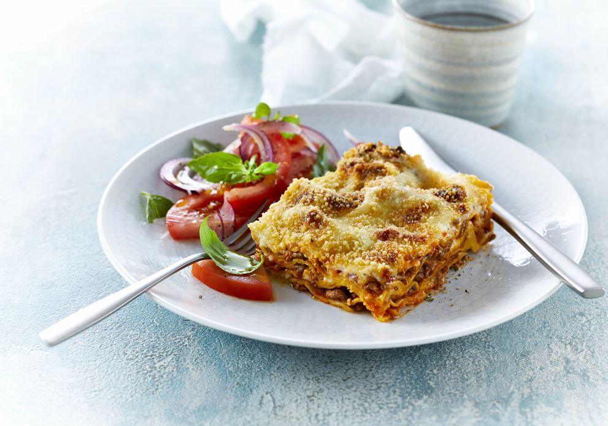

Lasagna

Description
When John Chandler submitted this lasagna recipe to this more than 20 years ago,
he had no idea how successful it would become.
Ingredients
- 1 pound sweet italian sausage
- ¾ pound lean ground beef
- ½ cup minced onion
- 1 can of crushed tomatoes
- 2 gloves garlic, crushed
- 2 cans canned tomato sauce
- 2 cans tomato paste
- ½ cup water
- 2 tablespoons dried basil leaves
- 4 tablespoons chopped fresh parsley, divided
- 1½ teapons dried basil leaves
- 1½ teaspoons salt, divided, or to taste
- 1 teaspoon italian seasoning
- ½ teaspoon fennel seeds
- ¼ teaspoon ground black pepper
- 12 lasagna noodles
- 16 ounces ricotta cheese
- 1 egg
- ¾ pound mozzarella cheese, sliced
- ¾ cup grated parmesan cheese
Steps
- Make the meat sauce
- Cook the noodles
- Make the ricotta mixture
- Layer the lasagna according to the recipe instructions
- Cover with foil and bake
- Let the lasagna rest before serving
Layers
- Meat sauce
- Noodles
- Ricotta mixture
- Mozzarella slices
- Meat sauce
- Parmesan cheese
- Repeat the layers, then top with the remaining parmesan
How long to cook lasagna
The assembled lasagna should tke about 50 minutes to cook
in an oven preheated to 375 degrees F. Cover it with foil for
the first 25 minutes, then let it cook uncovered for the final
25 minutes. Also, its important to let the lasagna rest at room
temperature for about 15 minutes before you cut into to